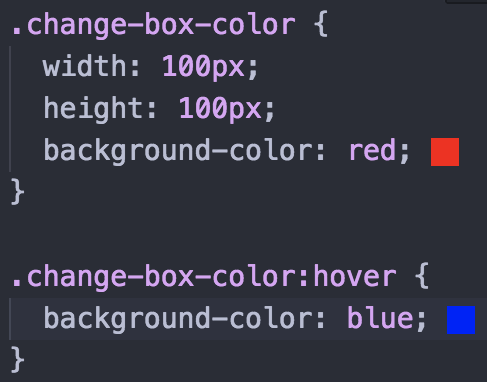
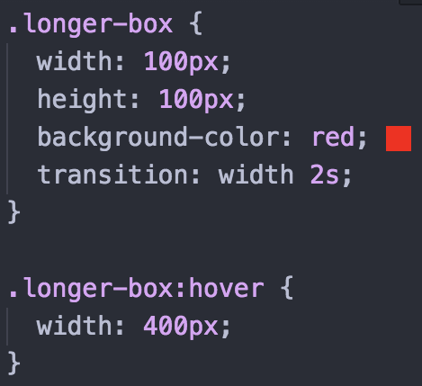
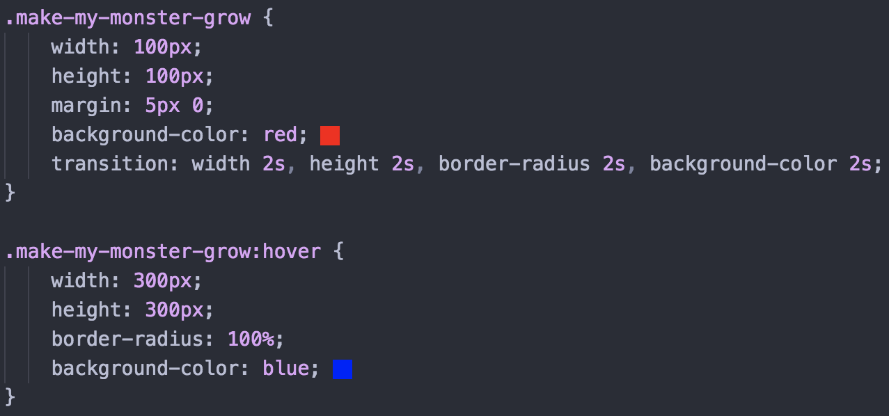

CSS TRANSITION
With the use of psuedo-classes, you can change an element when an action is taken on that element. For example, if you have a red square, you can set the pseudo-class ":hover" to it so that it changes to a different color when the mouse is hovering over the square, such as with the square below.
Code:
As you can see in the code, the psuedo-class ":hover" changes the background color for the square from red to blue.
But this transformation is instantaneous. What if you want to see the transformation?
We use CSS Transitions!!
With the help of the transition property, you can have your element transform over the course of a set amount of time that you determine. For example, let's say you have another red square, and you want to change its width from its initial 100px to 400px. You start by creating your square as you normally would in HTML and CSS. However, in your selector, you're going to add "transition:" along with the selector you want to change, along with how much time you want the transformation to take up (in seconds, denoted with an 's'). Hover over the square below to see the transition property in effect.
Note: When you stop hovering over the elemnt, it will revert back to it's original state, but it won't be instantaneous. The amount of time you select for the transformation to occur will also be used to reverse the transformation
Code:
What's really cool is you can transition multiple properties at once! Below is our standard red square, but hover over it!
Here, we are changing the elements width, height, border-radius AND background-color. Each of these have been set to change at the same speed, making the transformation more fluid.
Code:
Numerous options are available, and integrating JavaScript opens up more possibilities.
Note: Due to certain compatabilities, it may be necessary/wise to add vendor prefixes to your transition property to ensure compatability across various browers. A list of prefixes can be found on MDN's CSS Transitions page (below).
Additional Resources: